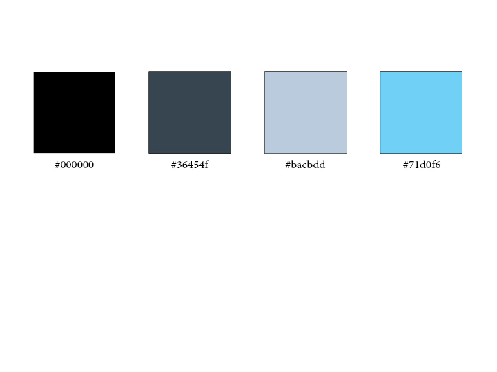

Color Scheme:
Where Each Color is Used:
I plan on using a clean white background with black text for the body. I want to use a black title bar with white text, with a gray navigation bar with white text. The blue and light gray will be used as highlights in the logo or other small elements or buttons.